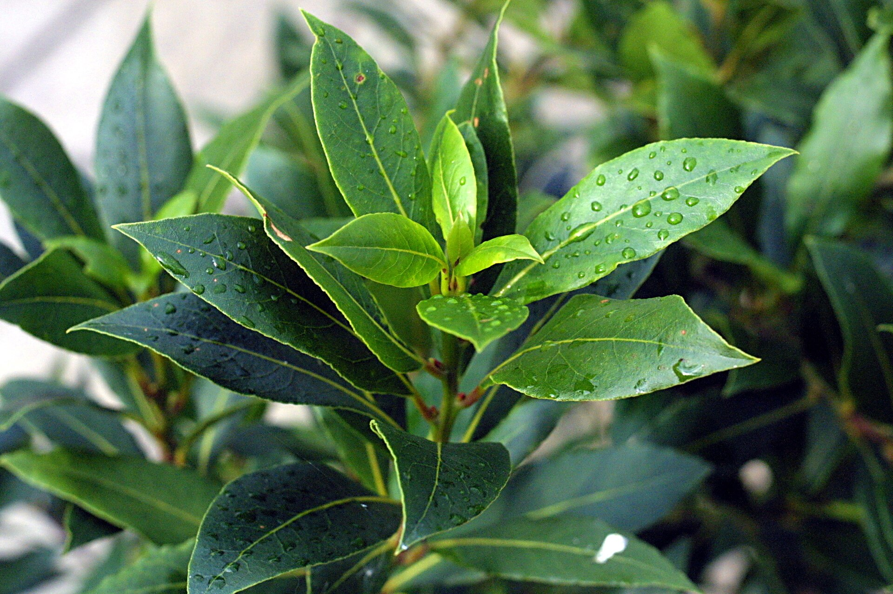

Árvores e Frutíferas
Louro
Laurus nobilis
O louro usado como tempero vem geralmente do loureiro (Laurus nobilis), uma árvore ou arbusto perene de folhas aromáticas. As folhas são usadas frescas ou secas em preparações culinárias. Como vários nomes populares podem ser compartilhados por plantas diferentes, a página descreve o loureiro verdadeiro como referência para o cadastro.
- Espécie de referência
- Laurus nobilis
- Tipo de planta
- Árvore ou arbusto perene
- Uso comum
- Folhas aromáticas como tempero